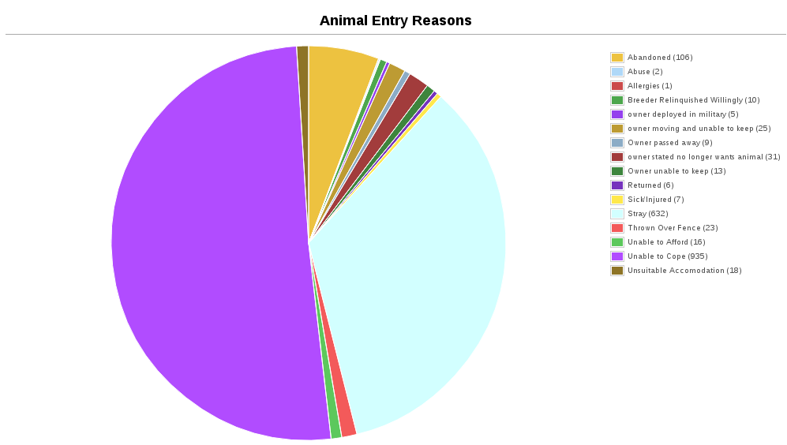

13 Reports
Animal Shelter Manager offers some highly detailed reporting facilities that fall broadly into the following categories.
All reports are accessed from the Reports top level-menu. By default, ASM does not install with any reports. You must install them from Settings->Reports->Browse sheltermanager.com – this requires your ASM server to have access to the internet. There's an “Install Recommended” button you can use to choose the default set to install.
Some of the standard, most useful reports you should install are:
-
Long Term Animals: Produces a detailed report of animals who have been in the shelter longer than three months.
-
Shelter Inventory: Outputs total figures for every animal on the shelter, broken down by species and their location within the shelter.
-
Detailed Shelter Inventory: Identical to the Shelter Inventory, except it provides details of the individual animals as well.

-
In/Out: Shows a detailed listing of all the animals that entered or left the shelter between two dates.
-
In/Out Summary: Identical to the In/Out report, but only shows the bottom line totals without information about the actual animals.
-
Animals Returned Within Six Months: Produces a detailed report of animals who were returned to the shelter within six months of adoption (allows you to select a date range to filter the animals down to when they were adopted).
-
Animals Returned After Six Months: Functionally the same as Animals Returned Within Six Months, except it only shows animals who were returned after six months of adoption.
-
Returned Animals Report: Produces a detailed report of animals (complete with full adoption histories) who have been returned between the two dates specified.
-
Animal Death Reasons: Produces a report listing all the reasons for which animals have died on the shelter.
-
Monthly Donations: Charts donations taken for animals brought into the shelter and adopted to new owners over the selected year (as well as arbitrary donations).
-
Monthly Donations By Species: Same as monthly donations, but only for a particular species and does not include arbitrary donations.
-
Monthly Adoptions By Species: Charts the number of adoptions of a particular species over a selected year.
-
Monthly Adoptions By Locations: Charts the number of adoptions of a particular species over the different shelter locations over a selected year.
 -
Animal Entry Reasons: Charts the different reasons for animals entering the shelter over the selected year.
-
Animal Return Reasons: Charts the different reasons for animals being returned to the shelter over the selected year.
13.1 Customising Reports
In addition to the stock reports provided by the sheltermanager.com repository, it is possible to create your own, using a simple language called “SQL” (short for “Structured Query Language”). SQL is a language for retrieving and formatting information - underneath, ASM uses this language to talk to its database (Either MySQL or PostgreSQL - as the names imply, they all talk SQL).
The reports editing screen is located under the Settings menu, any reports you create will integrate into the Reports menu. You can also use this screen to rearrange and rename existing reports and charts in the system. You can also assign “view roles” to reports. If you assign one or more view roles, then only users in those roles will be able to run the report and see its output.
In addition to just creating queries, you can then format how the data is transformed and displayed to you in the format of a report. Again, this is done through the use of another language - HTML (HyperText Markup Language). This is the same language used for creating web pages on the internet. Note however that the report editor has a button to automatically run your query and generate the HTML for you in a simple table format. It is worthwhile running this and then modifying the HTML afterwards.
For some excellent beginner tutorials on both SQL and HTML, see www.w3schools.com
13.1.1 SQL Keys
This all seems very well, but what happens if you want to create a report that needs to request specific information from the user before running - eg: To filter between two dates, or only show animals of a particular species, etc?
ASM offers SQL preprocessor instructions to allow you to substitute system information, or information requested from the user at report generation time.
-
$USER$ - Substitutes the current user's name.
-
$CURRENT_DATE$ - Substitutes today's date in an appropriate string SQL format for the current database. This saves you having to use NOW() or CURRENT_DATE() or various other SQL functions specific to one database.
-
$PARENTKEY$ - Substitutes the field value named in the report calling this subreport. For example, a report could pass an Animal ID as the parent key to a subreport for filtering data correctly. When you use this key in your report SQL, ASM assumes that this report is a subreport and will not display it on the menu.
-
$PARENTARGX$ - Substitutes argument X passed to the subreport. For example, a subreport generated with {SUBREPORT.Myreport.ID.ShelterCode.AnimalName} could access the parent AnimalName field with $PARENTARG3$. When you use this key in your report SQL, ASM assumes that this report is a subreport and will not display it on the menu.
-
AS money[fieldname] – If you alias an output field so that it has the prefix “money” as its name, the report engine will make sure it's formatted as a currency and assume that its value is a whole integer money amount (where 1 is 1 cent/pence/etc).
13.1.2 ASK
Ask is quite a detailed key, which requests information from the user at generation time. The basic syntax is this:
$ASK [DATE | [ALL]ANIMAL | LITTER | SPECIES | LOCATION | LOGTYPE | TYPE | NUMBER | STRING] [Message]$
Note that if you are substituting any kind of string value (ASK DATE or ASK STRING), you must wrap the ASK key inside string delimiters (the apostrophe ') otherwise you will get SQL errors.
The types are outlined below:
-
$ASK DATE message$ - requests a date from the user. A popup is displayed containing the message and the user is given an ASM date control to use to select the date. The value substituted is the date selected by the user in SQL string format appropriate for the database you are using.
-
$ASK ANIMAL$ - requests an animal. The value substituted is the animal ID.
-
$ASK PERSON$ - requests an person. The value substituted is the person ID.
-
$ASK LITTER$ - requests a litter identifier. A popup displays a list of the recent, active litters on the system. The value returned is the litter ID as a string.
-
$ASK SPECIES$ - requests a species from the user. A popup is displayed containing a dropdown of all species on the system.
-
$ASK LOCATION$ - requests an internal location from the user in the same manner as $ASK SPECIES$
-
$ASK VOUCHER$ - requests a voucher from the user in the same manner as $ASK SPECIES$
-
$ASK DIET$ - requests a diet from the user in the same manner as $ASK SPECIES$
-
$ASK LOGTYPE$ - requests a log type from the user in the same manner as $ASK SPECIES$
-
$ASK TYPE$ - requests an animal type from the user in the same manner as $ASK SPECIES$
-
$ASK NUMBER message$ - requests a numeric value from the user. A box is popped up containing the message and the user is given a standard text box to enter the number in. They will not be allowed to continue until a valid number is entered. The value returned is the number.
-
$ASK STRING message$ - requests a string value from the user (eg: Name, Address, etc.). A box is popped up containing the message and the user is given a text box to enter the string in. The value substituted is the string.
13.1.3 VAR
VAR works just like ASK, the only difference is that instead of substituting the value into the SQL, it stores it to a variable name. You can then substitute the variable multiple times in your SQL.
$VAR <varname> [DATE | [ALL]ANIMAL | LITTER | SPECIES | LOCATION | LOGTYPE | TYPE | NUMBER | STRING] [Message]$
The VAR tag should appear in your SQL before you reference the variable created. The variable is substituted with $@varname$
This example shows a list of animals of a selected species brought in after the given date. The species and broughtinafter variables could be reused as many times as we like.
$VAR species SPECIES$
$VAR broughtinafter DATE The date the animals were brought in after$
SELECT AnimalName, DateBroughtIn FROM animal
WHERE SpeciesID=$@species$ AND DateBroughtIn >= '$@broughtinafter$'
13.1.4 Report Grouping and Calculations
In addition, ASM allows you to do a number of transformations to the output HTML. You define a number of “blocks” to your reports. Anyone who has used a reporting tool (eg: Microsoft Access or Crystal) will recognise these.
-
$$HEADER ... HEADER$$ - The topmost section of the report should be entered here.
-
$$FOOTER ... FOOTER$$ - The bottom most section of the report should be entered here.
-
$$BODY ... BODY$$ - The main section of your report where the detail goes.
-
$$GROUP_<field> .. GROUP$$ - Optional grouping level. If you want to group by a particular field in the formatted output, you should add a group block. Within the group block you must also define a $$HEAD and $$FOOT section.
-
$$NODATA … NODATA$$$ - A special block to output if the report query returns no data.
-
$$HTMLHEADER … HTMLHEADER$$$ - Override the report template HTML header and supply a new one instead.
-
$$HTMLFOOTER … HTMLFOOTER$$$ - Override the report template HTML footer and supply a new one instead.
For example, to group on the OwnerName field:
$GROUP_OwnerName
$HEAD
<h2>$OwnerName</h2>
$FOOT
<p>Number of owners with name '$OwnerName': {COUNT.OwnerName}</p>
ASM also offers a number of calculation instructions you may use in group $$FOOT blocks and the main $$FOOTER block. These are:
-
{SUM.<field>[.round]} - Calculates the total of a given field for a group. Optionally, you can specify the number of decimal places to round to.
-
{COUNT.<field>} - Calculates the number of records in a group (the field is ignored)
-
{AVG.<field>[.round]} - Calculates the average of a group, based on the total of the field and the number of records. Optionally, you can specify the number of decimal places to round to.
-
{MIN.<field>} - Shows the smallest value for a given field in a group
-
{MAX.<field>} - Shows the largest value for a given field in a group
-
{FIRST.<field>} - Returns the first value for a given field in a group
-
{IMAGE.<animalid>[.seq]} – (also valid in $$BODY) Returns a URL to the preferred image for the given animal ID. Animal IDs can be a $field from the selected data. If the optional sequence number is given, then a link to image seq (where seq is a 1-based count) for the animal is output instead. If seq is invalid, or the animal doesn't have a preferred image the default system nopic.jpg file is used instead.
-
{QR.<animalid>[.size]} – (also valid in $$BODY) Returns a URL to the google charting api to generate a QR code with a link to this animal's record for mobile devices. If size is not set, then 150x150 is used. Eg: {QR.$ID.200x200}
-
{LAST.<field>} - Returns the last value for a given field in a group
-
{PCT.<field>.<value>[.round]} - Returns the percentage of rows in the group where field <field> matches value <value>. Optionally, you can specify a number of decimal places to round to. Eg: {PCT.Sex.1.2} Would show the percentage of male animals in the group, rounded to 2 decimal places.
-
{SQL.<sql command>} - executes the SQL and outputs the value of the first field. Eg: {SQL.SELECT COUNT(*) FROM animal}. This tag is also available in the $$BODY block and can be used in conjunction with the field tags to produce a subquery. Eg: Suppose you wanted to show the number of movements attached to a particular animal without doing a group query with an inner join to adoption. You could just use {SQL.SELECT COUNT(*) FROM adoption WHERE AnimalID = $ID}
-
{SUBREPORT.<title>.<parentkey>[.<parentarg>]} - executes the custom report with [title] and with the [parentkey] being the name of a field from the current report data to pass down to the subreport. The report output is embedded in the current report. You can use the $PARENTKEY$ field in the subreport to access this value for filtering your data. Note that you can nest reports to an unlimited depth. You can pass an unlimited number of fields to a subreport, accessible as $PARENTARGX$ where X is the number of the argument you want to access in the subreport query.
Here is an example report to show all animals currently on the shelter, with their picture, grouped by their internal location and giving totals for each.
SQL:
SELECT animal.ID, animal.AnimalName, animal.ShelterCode, internalLocation.LocationName
FROM animal
INNER JOIN internallocation ON
animal.ShelterLocation = internallocation.ID
WHERE animal.Archived = 0
ORDER BY internalLocation.LocationName
HTML:
$$HEADER
HEADER$$
$$GROUP_LocationName
$$HEAD
<h2>$LocationName</h2>
<table>
<tr>
<th>Name</th>
<th>Code</th>
<th>Picture</th>
</tr>
$$FOOT
</table>
<p><b>Total at $LocationName: {COUNT.AnimalName}</b></p>
GROUP$$
$$BODY
<tr>
<td>$AnimalName</td>
<td>$ShelterCode</td>
<td><img src={IMAGE.$ID} width=300 height=200 /></td>
</tr>
BODY$$
$$FOOTER
FOOTER$$
13.2 Charts

Charts work just like the reports. The difference is that instead of generating HTML, you just choose a chart type from the type dropdown.
ASM will dissect the results of the query in the following way to generate a graph, depending on whether your query returns two or three columns.
13.2.1 Two columns
-
Each row in your result data becomes a point on the X axis
-
The first column in each row is assumed to contain the name used for the label on the X axis. Only string data should be used for the first column.
-
Each subsequent column is assumed to be a piece of data at that point on the X axis (and thus gives the Y axis its scale). Only numeric data can appear in columns after the first one.
-
The fieldname of each column after the label column is used to denote the data on the legend.
For example, this SQL will produce a graph that shows the amount of donations from animal movements each year. Following our scheme, the Year column being first is the X axis label, TotalAmount is the first datapoint for that item on the X axis.
SELECT YEAR(DateReceived) AS Year,
SUM(ownerdonation.Donation) AS TotalAmount
FROM ownerdonation
WHERE MovementID > 0
GROUP BY YEAR(DateReceived)
ORDER BY Year
Would produce data that might look something like:
|
Year |
TotalAmount |
|
2004 |
59840.00 |
|
2005 |
61893.00 |
|
2006 |
51039.10 |
|
2007 |
55984.00 |
Note that the graphs use a relative scale, interpreted from the data. If all of your column data is the same value, then the graph will not display because it has no variance.
13.2.2 Three Columns
-
Each row in your result data becomes a point on the X axis
-
The first column in each row is assumed to contain the name used for a series.
-
The second column in each row contains the X axis label.
-
The third column contains the value for the Y axis and must be numeric.
For example, this SQL produces a graph that shows the number of donations made for over a year by internal location. Each location becomes a series with a set of data points for each month of the year.
SELECT i.LocationName,
MONTH(ad.MovementDate) AS bimonth,
COUNT(ad.Donation) AS total
FROM adoption ad
INNER JOIN animal a ON ad.AnimalID = a.ID
INNER JOIN internallocation i ON i.ID = a.ShelterLocation
WHERE YEAR(ad.MovementDate) = $ASK STRING Which year to display for?$
AND ad.MovementType = 1
GROUP BY i.LocationName, MONTH(ad.MovementDate)
13.3 Maps
Maps are just like the reports. The difference is that instead of generating HTML, they will output map markers from a LatLong field.
ASM expects map queries to return a resultset containing two columns. The first is the LatLong marker for the map, and the second is the text to display in the popup when the marker is clicked.
For example, this SQL will produce a map that shows the location of every person on file, with their address when the marker is clicked:
SELECT LatLong, OwnerAddress FROM owner